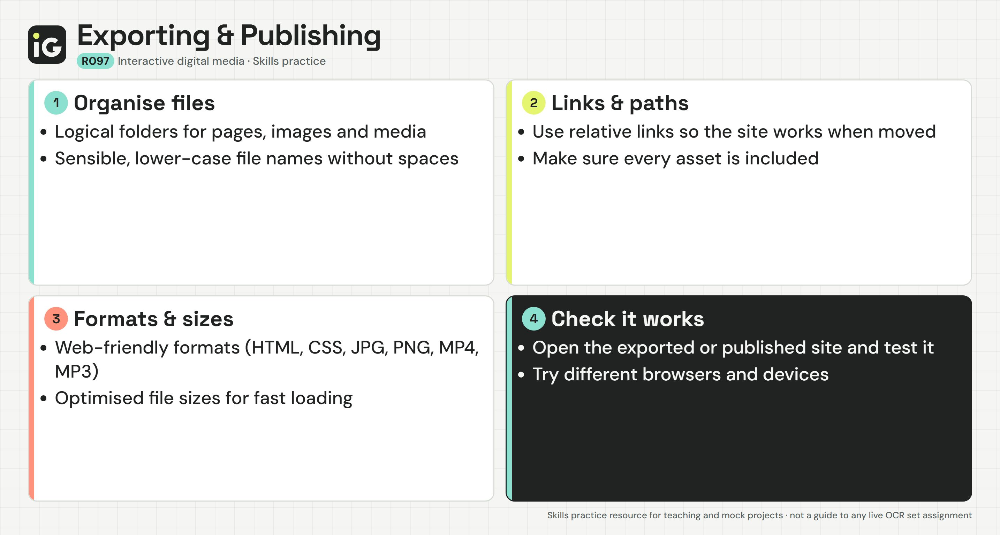

Editable versions
- Keep source project files

Export/publish your website so it meets the client requirements.
Use this checklist to make sure you can cover every part of this topic.
Exported products should open on the intended platforms and devices without installing extra software, e.g. standard web formats.